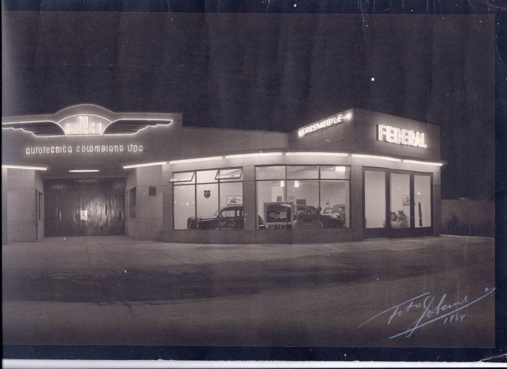

AUTECO, 80 AÑOS LIDERANDO LA MOVILIDAD EN COLOMBIA
Han pasado ocho décadas desde aquél 1 de septiembre de 1941 cuando a Don Paul Vásquez, se le ocurrió la magnífica idea de empezar a comercializar repuestos y partes de motocicleta en un pequeño local ubicado en una estación de gasolina del centro de Medellín, su visión emprendedora hizo que el negocio se transformara para abarcar un mercado poco conocido en ese tiempo.
no me copie, lo juro

¿Qué quiere decir Auteco?
Auteco (Autotécnica Colombiana S.A.S.) es un fabricante y ensambladora de automotores y motocicletas de Colombia. Fundada en 1941, fue la primera ensambladora de motocicletas en el país y en la Comunidad Andina.